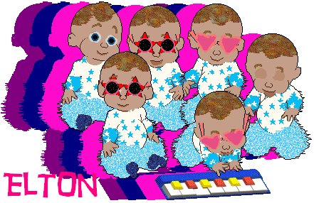
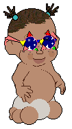
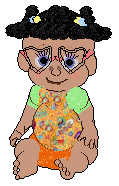
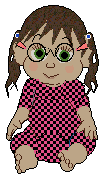

.
unusual glasses for your Babyz
~~~~~~~~~~~~~~~~~~~~~~~~~~~~~
These glasses were inspired by a request by Budgie, on the Insatiable forum, who wanted star-shaped glasses. Later on in the thread, Chris suggested heart-shaped sunglasses for babyz on the beach... It caught my imagination and here, at last they are for download along with a very special babyz hexed by Tigger.
In this montage by Tigger,

Tigger's Elton John is modelling
my Heart glasses
and
my Elton
Glasses
Click on the picture to download him. He looks best if you also have
installed my Elton Glasses and
clothes from Liz' Bubble Babyz boutique.
Read the
readme in his zipfile :-)
Also for your downloading pleasure, here is
another pair of glasses which is
really three (or even more) in one! Please read the readme very carefully
and install it properly, or it won't work for you. Hexers may also enjoy
this one. Here are three of my own babes, hexed for me by some lovely
people, modelling the set for you:



Delissa, from DStar, favours the Wacky Star glasses; Dream, from Garfield,
has a classier taste in hearts; and Jane's Serenity seems rather fond of the
simple circlets.
Enjoy!
.